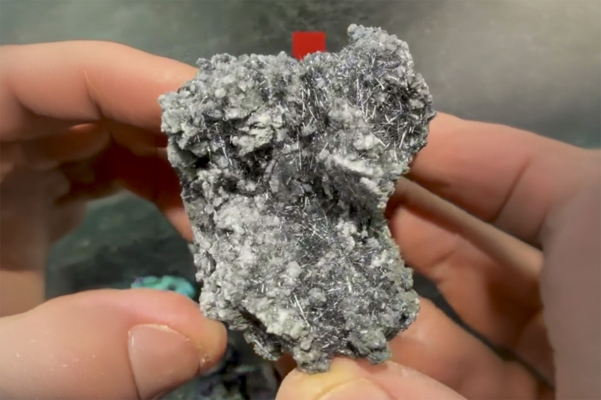

Jamesonite on Calcite
"Jamesonite Needles on Tiny Calcite Crystals"
II-10416
Noche Buena Mine, Mineral de Noche Buena, Melchor Ocampo Municipality, Zacatecas, Mexico
ex Jack Neiburber collection
Purchased 5/23/2026 from MinCollect for $51.00
Core Collection • In Collection
Details
Storage Type: Flat
Storage Location: 159 Mixed Miniatures
Size class: Small Cabinet (0)
Dimensions: 7.1 × 4.9 × 5.7 cm
Mass: 147 g
Luster: Above Average, Metallic